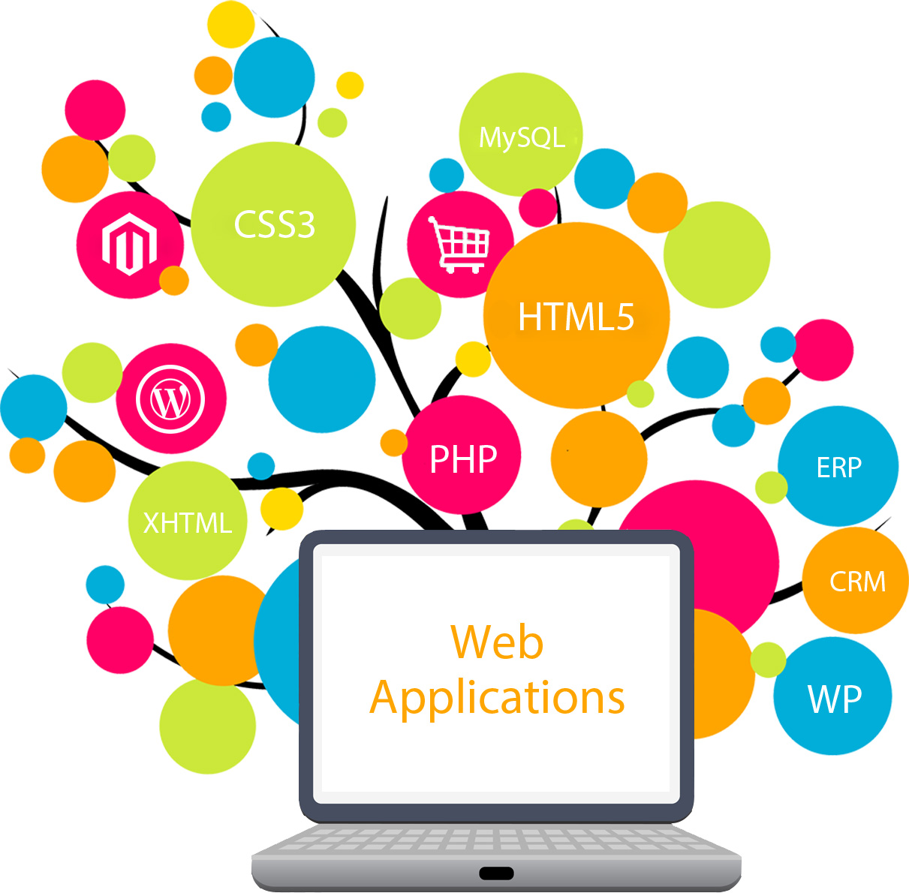

Desarrollo de Aplicaciones Web

En este curso, impartido por el profesor Braulio Solano estamos aprendiendo
a desarrollar aplicaciones y páginas web. Hasta el momento hemos aprendido sobre
diseño, html, css y el framework front-end Foundation 6. En la primera tarea implementamos
un servidor HTTP básico en Java. Este sitio web personal es otra de las tareas.